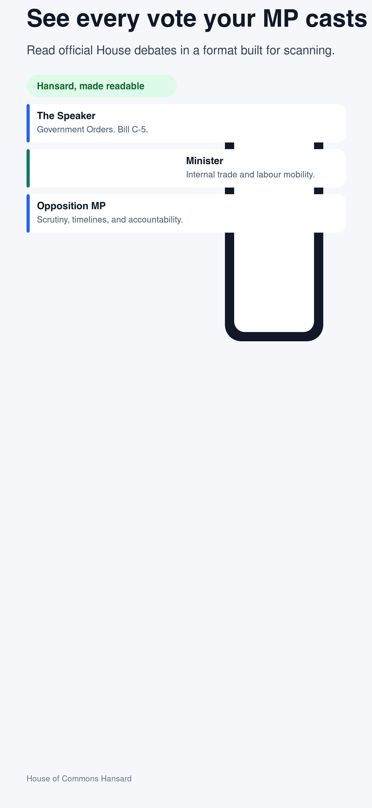
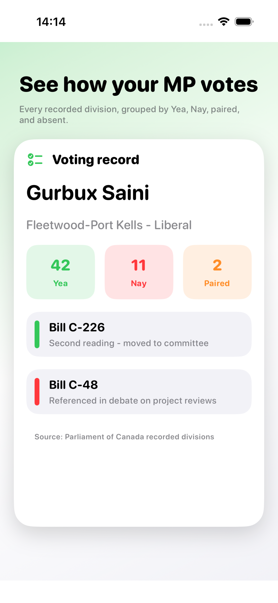
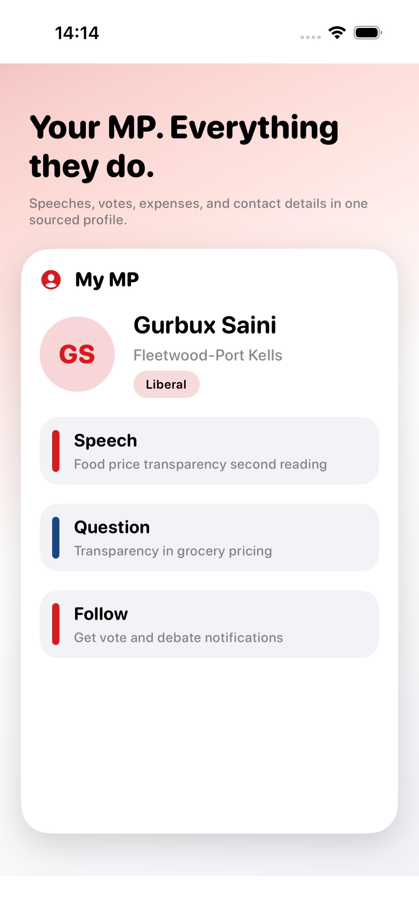
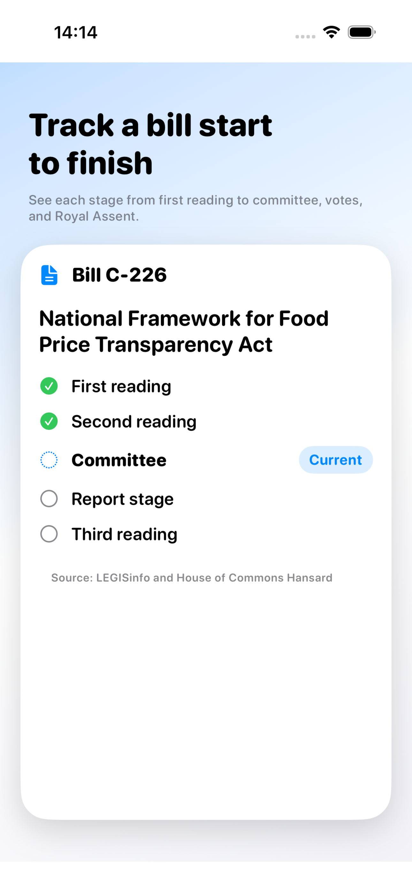
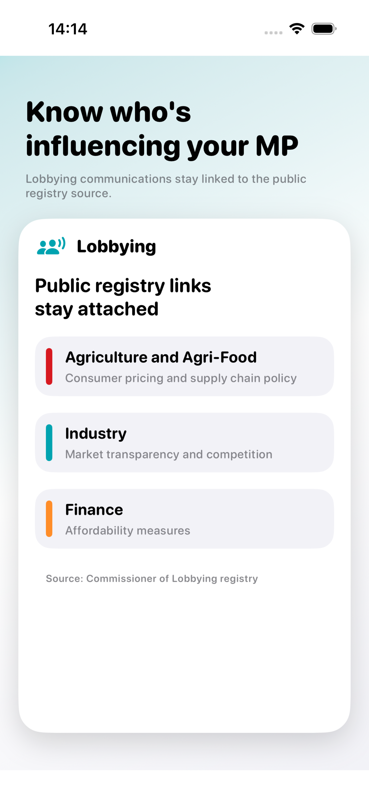
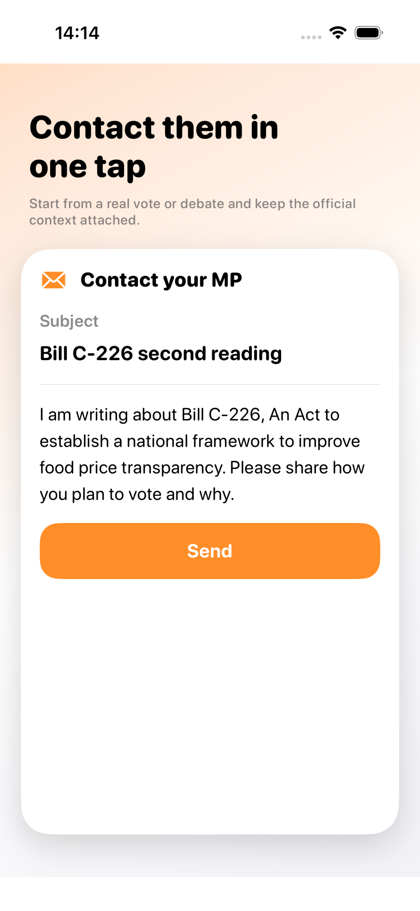

Everything epac does
All data comes exclusively from official Canadian government sources — Parliament of Canada, Elections Canada, Statistics Canada, the Commissioner of Lobbying, CER, IRCC, and Health Canada.

💬 Hansard Debates
Every word spoken in the House of Commons displayed as a group chat — exactly who said what, in order. Tap any speaker to see their full profile. Search debates by topic across all sitting days you've opened.
Source: House of Commons Hansard

✅ MP Voting Records
See every recorded vote your MP has cast — Yea, Nay, or Paired — with the final result and date. Filter by bill. Write directly to your MP about any vote with a pre-filled email template.
Source: OurCommons Recorded Divisions

🗺️ My MP
Enter your postal code to identify your Member of Parliament. See a unified activity feed of their votes, speeches, and expenses in one place. Follow additional MPs to expand your feed.
Source: Elections Canada & Parliament of Canada

📜 Bill Tracker
Follow any federal bill from first reading to Royal Assent. Get notified when a bill's stage changes. See PBO independent cost estimates alongside government estimates for major bills.
Source: LEGISinfo & PBO

🤝 Lobbyist Connections
Who is lobbying your MP? Track communications and registrations directly from the official registry. See which companies and organizations are meeting with your representatives.
Source: Commissioner of Lobbying Registry

📣 Civic Action
Write to your MP directly from any vote or speech with pre-populated context. Browse and sign official House of Commons e-petitions without leaving the app.
Source: House of Commons e-Petitions
💰 MP Expenditures
Quarterly travel, hospitality, and contract spending for every Member of Parliament. Drill down into individual travel claims, hospitality events, and supplier contracts.
Source: Proactive Disclosure via Parliament of Canada
🏛️ Committee Transcripts
Standing committee hearings from the OurCommons open API — the meetings where MPs question witnesses and study legislation in detail.
Source: OurCommons Committees API
📊 Riding Statistics
Census data, housing market links, and provincial statistics (CPI, EI, CER, and more) for your riding. Put policy votes in the context of your community.
Source: Statistics Canada, CER, IRCC, Health Canada
🏢 Ontario Legislature
MPP profiles, party affiliations, and Queen's Park debates from the Ontario Legislative Assembly — the same chat format for provincial issues.
Source: Legislative Assembly of Ontario
🔴 Senate Coverage
Senator profiles and My Senators section — see which senators represent your province and follow their activity alongside your federal MP.
Source: Senate of Canada
🔍 System-Wide Search
Search MPs, votes, bills, and debate topics from a single screen. Results appear in sections so you can distinguish people, legislation, and debates at a glance.
🔒 Privacy First
No account. No login. Your followed MPs, bills, and topics stay on your device. Nothing is sold or shared. epac doesn't know who you are.
Free on the App Store. No account required.

iOS 17+ · Requires no account · Data from Parliament of Canada